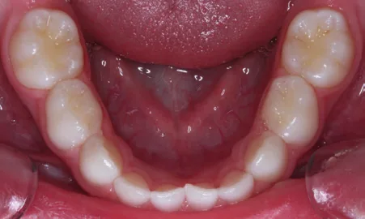

نسخه استخراجشده؛ ترجمه یا تأیید علمی انجام نشده است. وضعیت: captured
حدود ۸ تا ۹ سالگی، ثنایاهای دائمی بالا با فاصلهی وسط و تاجهای متمایل به بیرون رویش مییابند. والدین این را فاجعه میبینند؛ نامش مرحلهی اردک زشت است.
چرا رخ میدهد؟ تاج کانینهای دائمی که هنوز نروییدهاند، به ریشهی ثنایاهای جانبی فشار میآورد و تاجها را به سمت دیستال میراند.
سرنوشتش چیست؟ با رویش کانینها در حدود ۱۱ تا ۱۲ سالگی، فشار برداشته میشود و فاصله خودبهخود بسته میشود.
قاعدهی بالینی: دیاستم میانی تا حدود ۲ میلیمتر در این مرحله طبیعی است و درمان نمیخواهد. بستن زودهنگام آن، فضای لازم برای کانین را میگیرد.
ثنایاهای دائمی بهطور محسوسی از ثنایاهای شیری پهنترند. به این تفاوت کسری فضای ثنایاها میگویند:
در فک بالا: حدود ۷٫۶ میلیمتر
در فک پایین: حدود ۶ میلیمتر
بدن این کسری را با سه سازوکار جبران میکند:
مصرف فضاهای تکاملی و پریمیت که از قبل موجود بودهاند.
افزایش عرض بینکانینی قوس در حین رویش ثنایاها.
قرارگیری جلوتر و متمایلتر ثنایاهای دائمی نسبت به شیریها.
به همین دلیل نامرتبی خفیف ثنایاهای پایین در ابتدای رویش شایع است و بخشی از آن با همین سازوکارها برطرف میشود.

نوع سؤال: ساخت کلمه · 3 خانه
حروف منبع: ت · ه · ف